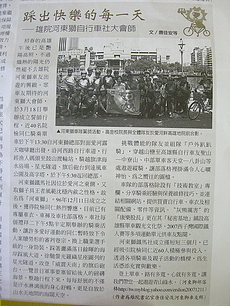

狂賀^^
本自行車隊，
榮獲司法界第一大刊物--OO周刊專訪報導，
詳情請看司法周刊第1389期（97.5.15出刊）
茲為饗讀者，轉引刊載如下：
初春的高雄午後已是艷陽高照，不過熾熱的陽光仍然褪不去雄院河東獅車友出遊的興緻。眾車友期待的河東獅大會師，於3月18日舉辦成立誓師行程，近40名院檢同仁騎乘單車於下午13:30自河東獅總部對面愛河露天咖啡廳出發，沿河西路自行車道，行經漁人碼頭至鼓山渡輪站，騎越旗津海水浴場、星光隧道、旗后砲台到達風車公園及高字塔，於下午5:30返回總部。這是高雄市特有兼具人文古蹟及海岸自然景觀的車道，全程盡覽旗津的精華景點。近4小時海、風、大自然的伴行，車友們盡情享受騎乘腳踏車的樂趣，展露該社在忙裡偷閒以休閒、健身為目的的隊風。
河東獅鐵馬社因位於愛河之東側，又取獅子具王者風範沈穩內歛之性格，故名為「河東獅」。96年12月11日成立之後，獲得院檢同仁熱烈響應，目前已有專屬車衣、車褲及車社部落格。車社更藉地利之便，整合愛河、臨港碼頭、西子灣、柴山等人文景觀，依社員體力規劃各項休閒、運動及挑戰級等不同騎乘路線。每個禮拜二下午5點半定期舉辦的騎乘活動，讓許多愛好運動的同仁暫時放下令人案牘勞形的審判卷宗，換上職業選手級的一身勁裝，踩著灑滿落日餘暉的海岸踩風大道，徐馳螢光羅織星座圖列的星光隧道，攻登「威震天南」的旗后砲台，一覽昔日軍事要塞留給後人的磅礡海景。整趟行程下來，每每舒展的不僅是汗水淋漓後的身心舒暢，更是自放於山水天地間的海闊天空。
車隊除每週一次的例行活動，隊友們更經常利用假日攜家帶眷休閒悠遊行，一張張依傍海天一色的親子闔家照，成為部落格的最佳背景畫面。挑戰體能的隊友並組隊「戶外趴趴騎」，穿越山巒至高雄縣自行車友聖山─中寮山、中部單車客天堂─八卦山等處遨遊縱騎，讓部落格裡掛滿令人心曠神怡、為之嚮往的圖檔。
車隊的部落格除設有「技術教室」專欄，分享騎乘經驗與保養維修技巧，並連結相關網站，提供買賣自行車、車衣及相關配備、零件等資訊。〞灰熊厲害〝的「康樂股長」更在其「秘密基地」鋪設高雄縣單車觀光文化祭、2007西子灣國際鐵人賽等多項運動單元供車友點閱。多篇精彩的單車誌，深入介紹后豐鐵馬道、賽嘉鐵馬道等國內自行車道，對沿途景色、騎乘路線及車程規劃提供最佳導覽。
河東獅鐵馬社成立僅短短三個月，已經吸引院檢同仁近60人積極參與投入。車友們穿著河東獅的車衣穿梭於山海之間，彼此除多了一份親切與照應，透過各項騎乘及親子活動的橋樑，更讓大家拉近距離、洋溢熱情和朝氣，為生活憑添充實與歡樂。
當你持續的說你非常忙碌，就永遠不會得到空閒。當你持續的說你沒有時間，就永遠不會有時間。運動的方式很多，但單車運動沒有界線，路有多寬，心就有多寬。歡迎一起參加河東獅鐵馬社，一起擁有彩色的明天。（唐佳安暨河東獅車友群）

@本車隊於OO周刊登載實錄
高雄自行車活動獎品價值20萬以上信箱qaws3456@yahoo.com.tw 高雄各位自行車運動.的喜愛者你們好 高雄金航自行車7月18日舉行.自行車結婚郊遊活動. 獎品有引擎概念自行車.可口可樂紀念車.海尼根紀念車.復古自行車. 古董紀念車. 珠項鍊70條.市價價值5000元以上[橢圓形.圓型.方型.白色.粉紅色.保證真貨] 價值20萬以上..暑假南部唯一自行車活動. 報名專線07.396.2912....費用300元 .歡迎車隊.集體報告另有優待. 高雄自行車活動7月18號.獎品價值20萬qaws3456@yahoo.com.tw連絡信箱 我的賣場還有電動自行車...引擎自行車..組裝套件..批發.零售.充電2元跑40公里.. 組裝電動車不到5000元..電池另購.為自行車事業再創高峰. 另外有加油60元跑120公里.用油為一般機車4分之一..可省4倍以上油錢 .服務預約專線.07.396.2912. 地址.高雄市三民區民族一路318.1號[光陽機車對面.灣興街口] 歡迎轉貼.刊登.廠商合作辦活動.歡迎轉貼
http://tw.myblog.yahoo.com/qaws3456/article?mid=1&prev=-1&next=-1金航自行車活動獎品網址